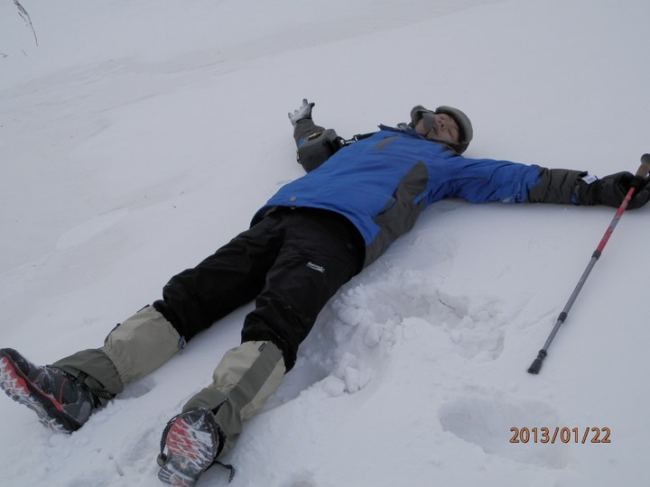
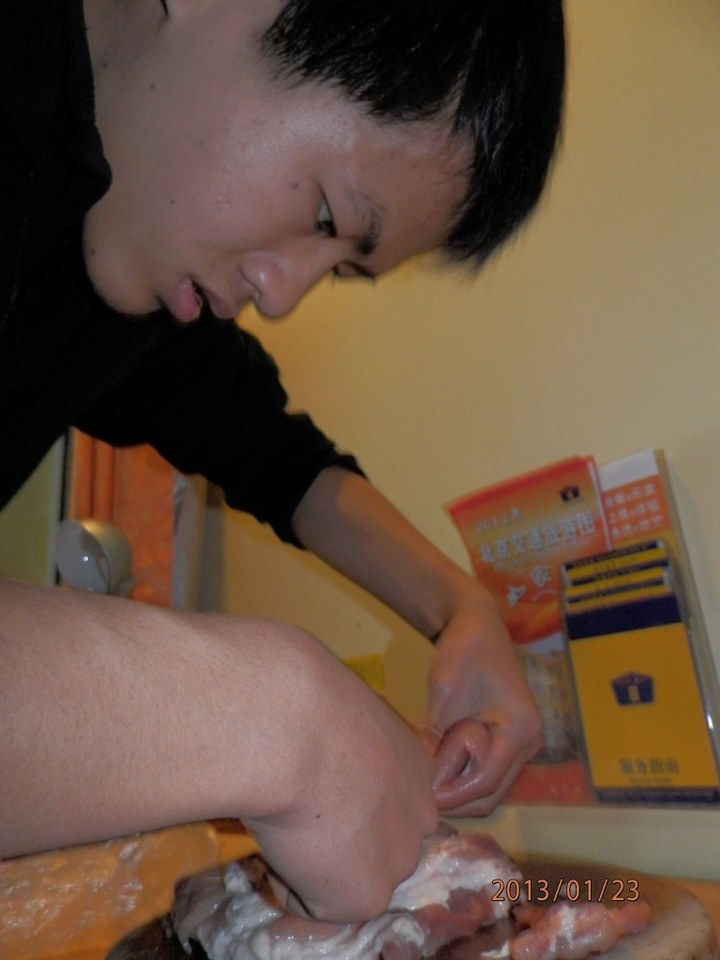
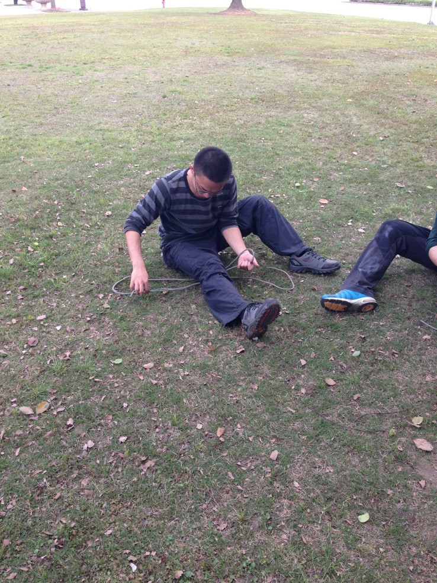
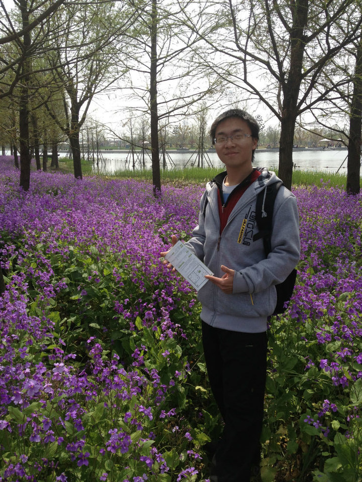
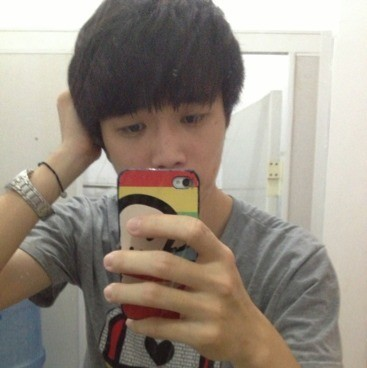
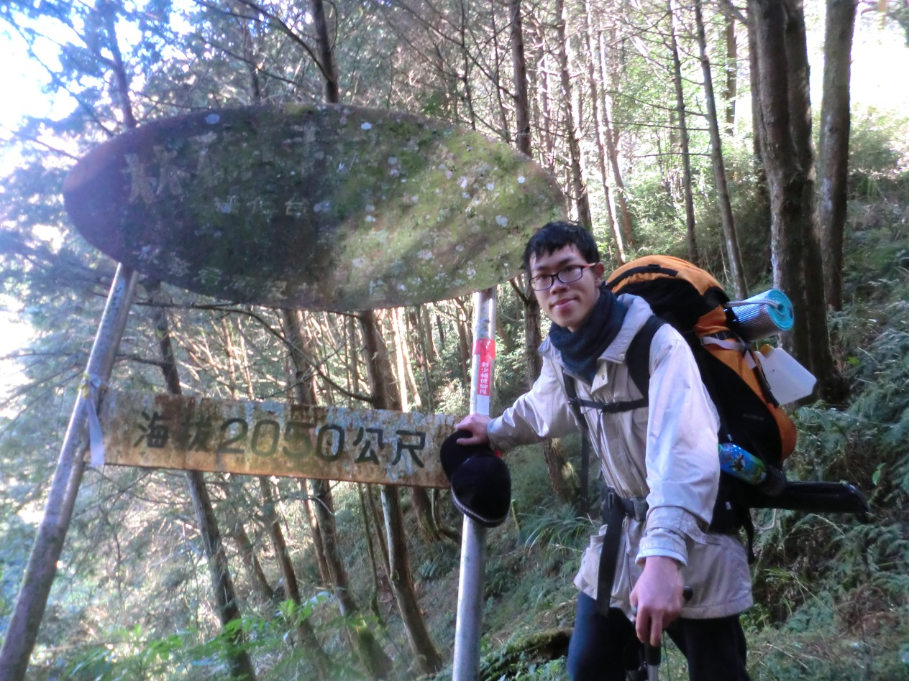
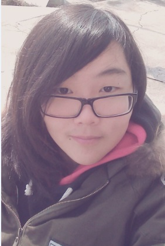
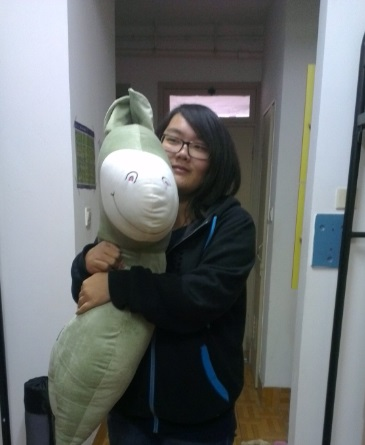

发信人: haocliff (超级大猴子), 信区: outdoor
标 题: 【野协团爆】【第六弹】后勤部！
发信站: 饮水思源 (2013年06月08日01:44:34 星期六)
大后勤的居然成了压轴的，听说压轴的都是最好的（吼吼……）好吧，部长先带个头~~
我叫王根俊，，貌似是二脑残（其实我真的很脑残，一点都不靠谱。。。可YCC大妈居然说我
又二又脑残，好开心呀~~）。。。我是脑残我快乐 耶 咩哈哈！！！
嗯，对了，插播一条广告，医疗保障队马上就要成立啦，相关的医疗培训也将在小学期展
开，欢迎各位关注~~~~恩，不多说了，上图。。。
第零回，这图是被yyhh发漏的，这也太捉鸡了，⊙﹏⊙b汗，我自己发~~
话说这个图不怪yyhh 真发不上去 连巨牛逼的我也无能为力
额，第一回，时间：光天化日 地点：灵山 事件：被袁航谋杀（我的烤鸭呀呀呀呀呀。
。。）
 screen.width - 200){this.width = screen.width - 200}">
第二回，时间：北京冬训前，地点：北京某脑残头子家附近某宾馆，事件：切肉（不多说
呀，一群脑残太捉鸡了，
切割肉都得我来，我远离厨艺界好多年了呀~~）
 screen.width - 200){this.width = screen.width - 200}">
第三回金紫尖照的。。。我屮艸芔茻，这谁帮我照的？？真是……太好了，脸从没那么白
过（全是泪呀，云贵高原也是高原呀~~。。）
话说你太黑了 那么白的图也真心传不上来（今天网速实在拙计）
我是后勤保障部副部长、攀岩队副队长温宗麟，我爱野协，喜欢攀岩，追柯南，打篮球，
也玩三国杀、游戏王。
关于照片：1号图：这是在技能大赛的时候拍的，当时我在练习打绳结，不过图片定格的那
一刻我在打的是什么结我就不太记得起来了，好像是平结。
 screen.width - 200){this.width = screen.width - 200}">
2号图：这是我在辰山植物园花从前拍的，不过我也忘了我的舌头是怎么回事，居然伸出来
了，这只是个意外。
screen.width - 200){this.width = screen.width - 200}">
3号图：这是我在辰山植物园花丛中拍的，手上拿的好像是导游图，不过那手势其实没什么
意思的。
 screen.width - 200){this.width = screen.width - 200}">
邢华，上海中医药大学，后勤部安全员，负责社团出游的安全联络工作，爱野协，爱后勤
，爱安全员。
 screen.width - 200){this.width = screen.width - 200}">
大家好，我叫陈之彬，大家可以叫我阿冰。大一机动人，喜欢登山，尤其是跟朋友一起。
 screen.width - 200){this.width = screen.width - 200}">
邱昚帆
名字略复杂啦，好像基本好多人不认得，不过叫嫌麻烦的话我“帆帆”也可以的（神马奇
怪的叫法）。
据小清新苍老师说我喜欢卖萌，那我就名正言顺地卖萌了。喵，喵！
学渣一枚，在苦逼的电院挣扎，不能承受的生命之重啊！！！于是最不开心的是，有人黑
我是大神啊，神马都不会神个毛线啊，另外默默求学霸罩TAT。。。【蹲墙角
然后据说要卖萌，啊，不是，爆照，是么，默默表示赶脚特别不上镜不喜欢拍照，电脑里
都没啥近期的照片，于是random了一张有我的【摔
请多多指教喔
作为后勤部门最神秘的的人士没有之一o(￣ヘ￣o* )[握拳!]，我一向的原则被坑货部长逼
着打破了(╯‵□′)╯︵┻━┻，部长一生黑啊有木有！！！作为后勤部的一员，充分感
受到野协这个大家庭的美好，也十分庆幸能够在这里。下学期，继续征途吧(*￣︶￣*)y。
实在不喜欢拍照就凑合着看吧(lll￢ω￢)。
 screen.width - 200){this.width = screen.width - 200}">
 screen.width - 200){this.width = screen.width - 200}">
--
没有终点
※ 来源:·饮水思源 bbs.sjtu.edu.cn·[FROM: 183.192.182.124]
※ 修改:·haocliff 于 2013年06月08日01:46:25 修改本文·[FROM: 183.192.182.124]
※ 修改:·haocliff 于 2013年06月08日15:21:16 修改本文·[FROM: 202.120.50.199]
|